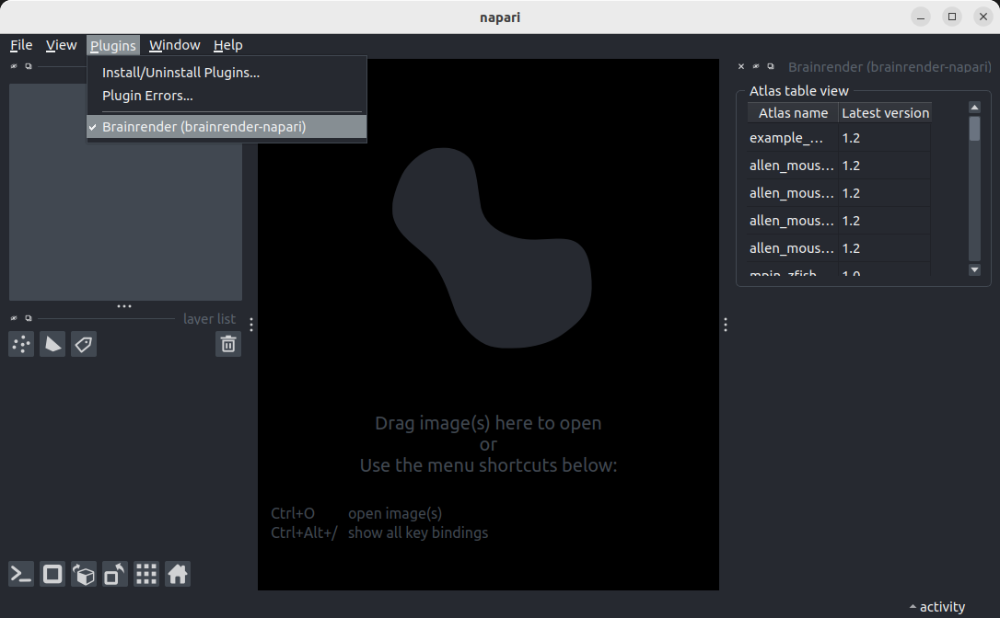
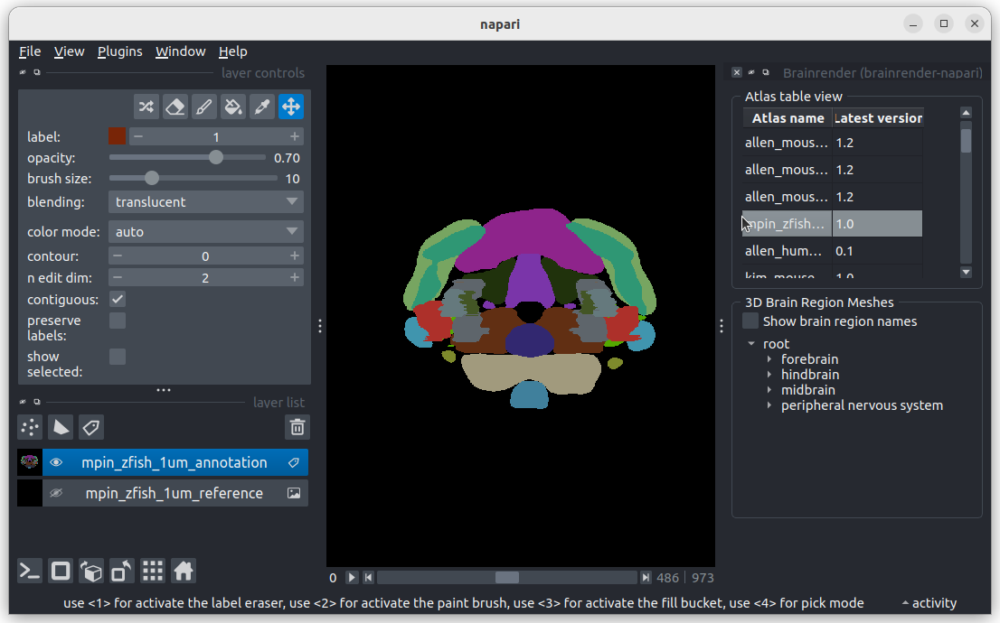
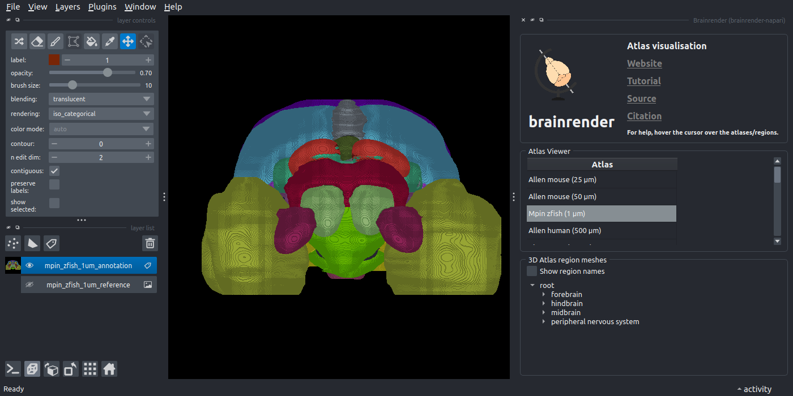
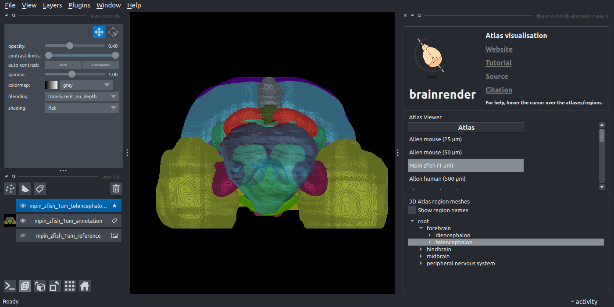
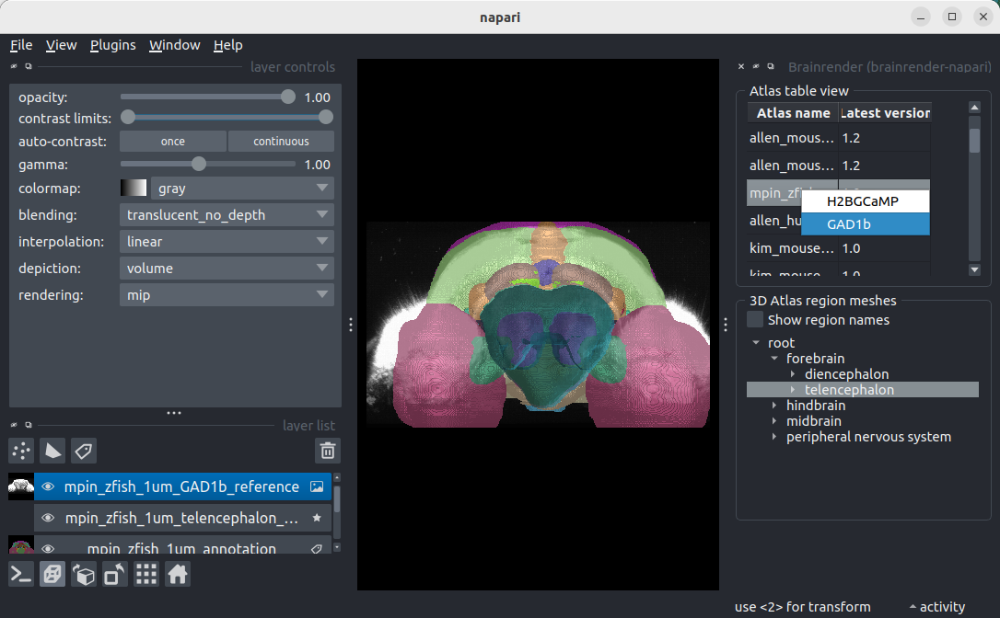

Visualise an atlas in napari#
BrainGlobe atlases are made of different components. These include the annotations image, the (default) reference image, 3D atlas region meshes and, optionally, additional reference images. In this tutorial, you will use brainrender-napari to visualise each of these components in the 3D viewer napari through a series of simple clicks. The mpin_zfish_1um zebrafish brain atlas will serve as an example.
Note
You will need napari installed on your computer - please follow napari’s installation instructions to do so.
Open
napari.Install
brainrender-napariby selectingPlugins > Install/Uninstall pluginsand searching forbrainrender-napariin the searchbox. Then click on theInstallbutton.Open the
brainrenderwidget by selectingPlugins > Brainrender (brainrender-napari)in the napari menu bar near the top left of the window. 
The brainrender widget appears on the right hand side of the window.
In the
brainrenderwidget’sAtlas table viewsection, double-click the row which contains thempin_zfish_1umatlas (you may have to scroll down slightly).

You have now added the annotations image and the default reference image to napari: They appear as layers in the napari layers list on the lower left of the window. A 3D Atlas region meshes section appears below the Atlas table view section.
Note
If you haven’t downloaded the atlas before, the plugin will prompt you to download it (click yes). It may take a long time (depending on your internet speed) so please be patient. Once downloaded, double-click again to view the atlas.
Toggle the napari display from 2D to 3D by pressing the button with the square icon on the lower left of the window.

The annotations image should now be displayed in 3D.
6. Navigate the brain region tree in the 3D Atlas region meshes section by opening “forebrain”. Double-click on telencephalon.

You have now added a 3D atlas region mesh layer, which appears as a mesh in the viewer and as a new layer in the layers list.
7. Back in the “Atlas table view” section, right-click on the mpin_zfish_1um row. In the menu that appears, select GAD1b.

You have now added an additional reference image, which appears as a grey scale image in the viewer and as a new layer in the layers list.
You have now added all possible kinds of BrainGlobe atlas components (annotations image, reference image, 3D atlas region mesh, additional reference) to napari - well done! You can now add any of the other atlases listed in the Atlas table view if you like (note that not all atlases have additional references!).
Note
Hover over any of the elements in the brainrender widget to get additional hints about how to use them!